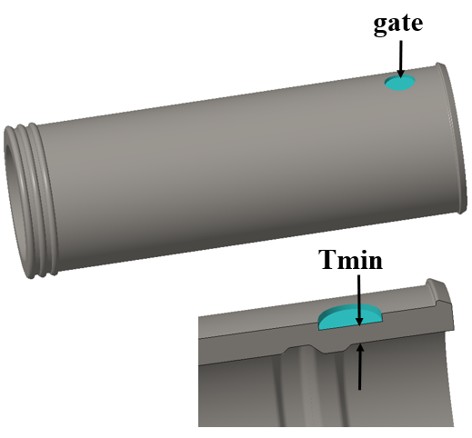
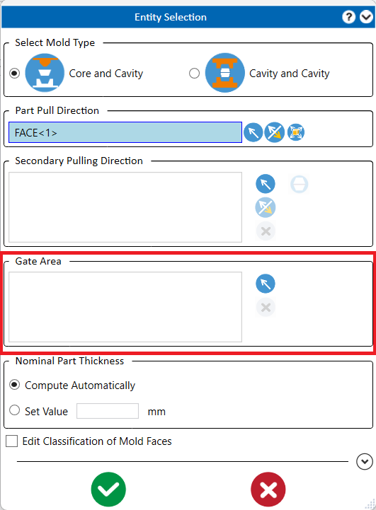
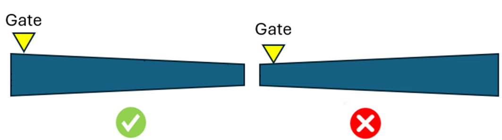

ゲート位置に基づき、このルールはその位置における最小肉厚値をチェックします。
ゲート位置は、部品の成形性、性能、外観、およびコストに直接影響を与えます。ゲート位置は充填パターンと最大材料流動長を決定します。設計者はゲート位置に関する知識を持つ必要があります。一般的に、ゲートは部品の最も肉厚な部分に配置され、ゲート設置のための十分なスペースが必要です。金型設計者はしばしば樹脂流動の都合に合わせてゲートを配置するため、外観部位に不格好なゲート跡やウェルドラインが生じることがあります。プラスチック部品は通常、流動方向に対してより高い強度を示します。ゲート位置は充填パターンと流動方向を決定するため、機械的荷重を受ける部品にとって正しいゲート位置は特に重要です。

ルールおよびルールファイルの選択に基づき、エンティティ選択グループボックスに Gate Area フィールドが表示されます。設計者がゲート領域を定義すると、このルールはゲート位置の肉厚を特定します。定義されない場合、このルールはすべてのコンポーネントの肉厚をゲート位置として扱います。

一般的なガイドラインとして、ゲートは部品の最も肉厚な部分に配置し、ゲート設置のための十分なスペースを確保する必要があります。
